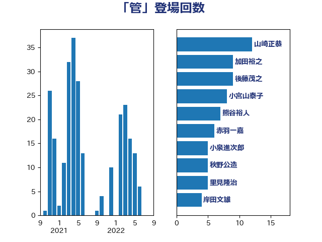

単語「管」

| 山崎正恭 | 公明党 | 12 回 |
| 加田裕之 | 自由民主党 | 9 回 |
| 後藤茂之 | 自由民主党 | 9 回 |
| 小宮山泰子 | 立憲民主党 | 8 回 |
| 熊谷裕人 | 立憲民主党 | 7 回 |
| 赤羽一嘉 | 公明党 | 6 回 |
| 小泉進次郎 | 自由民主党 | 5 回 |
| 秋野公造 | 公明党 | 5 回 |
| 里見隆治 | 公明党 | 5 回 |
| 岸田文雄 | 自由民主党 | 4 回 |
| 梶山弘志 | 自由民主党 | 4 回 |
| 若松謙維 | 公明党 | 4 回 |
| 大島敦 | 立憲民主党 | 3 回 |
| 斉藤鉄夫 | 公明党 | 3 回 |
| 日下正喜 | 公明党 | 3 回 |
| 末次精一 | 立憲民主党 | 3 回 |
| 梅村聡 | 日本維新の会 | 3 回 |
| 篠原豪 | 立憲民主党 | 3 回 |
| 羽田次郎 | 立憲民主党 | 3 回 |
| 萩生田光一 | 自由民主党 | 3 回 |
| 仁木博文 | 無所属 | 2 回 |
| 国定勇人 | 自由民主党 | 2 回 |
| 小沢雅仁 | 立憲民主党 | 2 回 |
| 櫻井充 | 自由民主党 | 2 回 |
| 美延映夫 | 日本維新の会 | 2 回 |
| 道下大樹 | 立憲民主党 | 2 回 |
| 三浦信祐 | 公明党 | 1 回 |
| 上田英俊 | 自由民主党 | 1 回 |
| 伊藤孝江 | 公明党 | 1 回 |
| 伊藤渉 | 公明党 | 1 回 |
| 佐藤啓 | 自由民主党 | 1 回 |
| 佐藤英道 | 公明党 | 1 回 |
| 加藤勝信 | 自由民主党 | 1 回 |
| 國重徹 | 公明党 | 1 回 |
| 城井崇 | 立憲民主党 | 1 回 |
| 室井邦彦 | 日本維新の会 | 1 回 |
| 宮本徹 | 日本共産党 | 1 回 |
| 小林鷹之 | 自由民主党 | 1 回 |
| 山下芳生 | 日本共産党 | 1 回 |
| 山下貴司 | 自由民主党 | 1 回 |
| 山本博司 | 公明党 | 1 回 |
| 山本香苗 | 公明党 | 1 回 |
| 山田勝彦 | 立憲民主党 | 1 回 |
| 山際大志郎 | 自由民主党 | 1 回 |
| 岡本三成 | 公明党 | 1 回 |
| 川田龍平 | 立憲民主党 | 1 回 |
| 平将明 | 自由民主党 | 1 回 |
| 木村英子 | れいわ新選組 | 1 回 |
| 杉本和巳 | 日本維新の会 | 1 回 |
| 森山浩行 | 立憲民主党 | 1 回 |
| 浜田聡 | NHK党 | 1 回 |
| 片山さつき | 自由民主党 | 1 回 |
| 玉木雄一郎 | 国民民主党 | 1 回 |
| 田村貴昭 | 日本共産党 | 1 回 |
| 空本誠喜 | 日本維新の会 | 1 回 |
| 藤原崇 | 自由民主党 | 1 回 |
| 藤巻健太 | 日本維新の会 | 1 回 |
| 足立敏之 | 自由民主党 | 1 回 |
| 野間健 | 立憲民主党 | 1 回 |
| 鈴木俊一 | 自由民主党 | 1 回 |
| 青山大人 | 立憲民主党 | 1 回 |
| 高橋光男 | 公明党 | 1 回 |